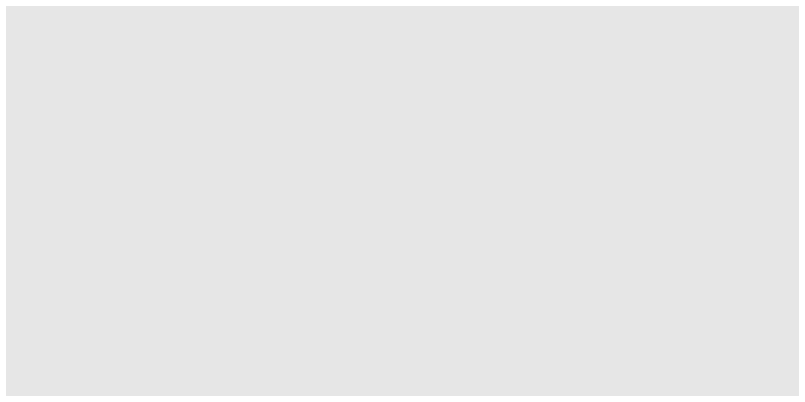
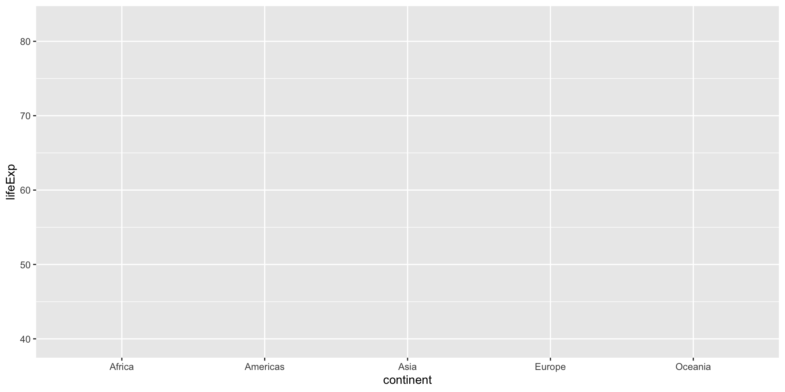
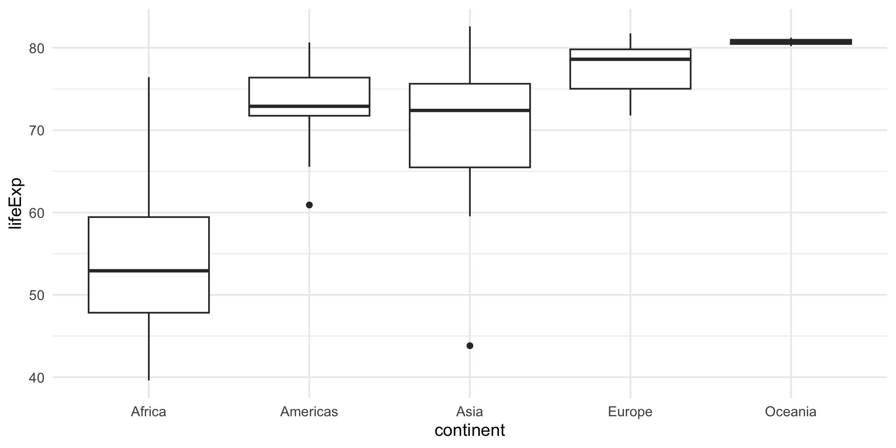
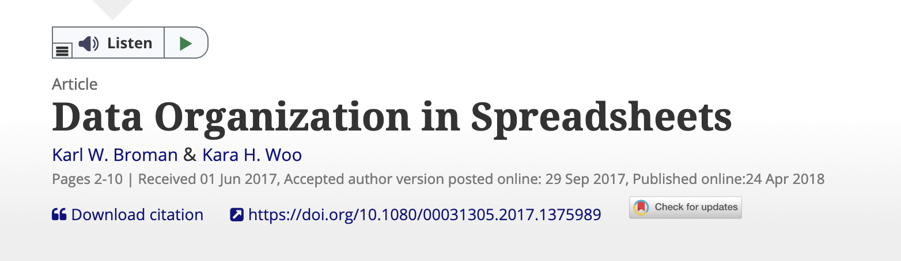
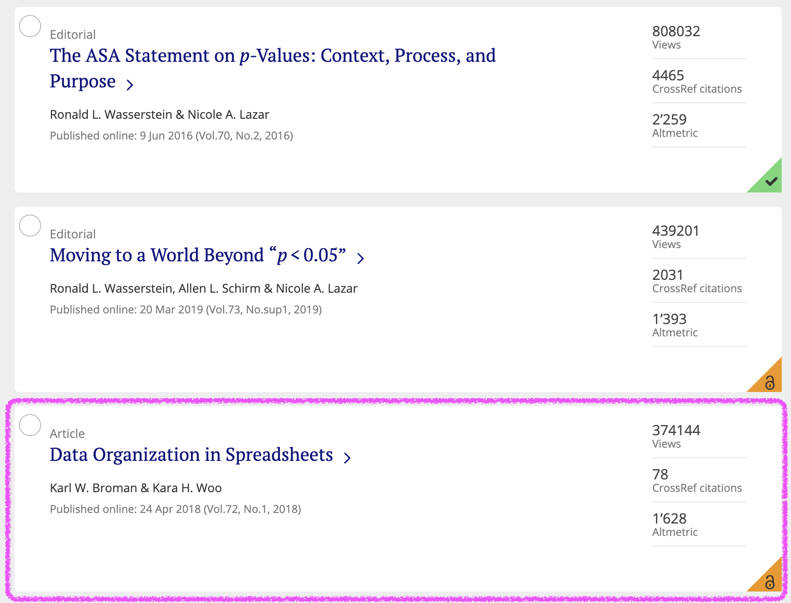
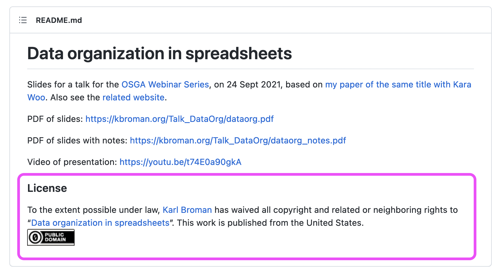

Exploratory data analysis using visualization & Data organization in spreadsheets
CVEN 5999 - Summer 2026
Lars Schöbitz
Solving coding problems
Tipps for search engines
- Use actionable verbs that describe what you want to do
- Be specific
- Add R to the search query
- Add the name of the R package name to the search query
- Scroll through the top 5 results (don’t just pick the first)
Example: “How to remove a legend from a plot in R ggplot2”
Stack Overflow
What is it?
- The biggest support network for (coding) problems
- Can be intimidating at first
- Up-vote system
Workflow
- First, briefly read the question that was posted
- Then, read the answer marked as “correct”
- Then, read one or two more answers with high votes
- Then, check out the “Linked” posts
- Always give credit for the solution
Tipps for AI tools
- Use actionable verbs that describe what you want to do
- Be specific
- Add R to the search query
- Add the name of the R package name to the search query
Example: “How to remove a legend from a plot in R ggplot2”
Other sources for help
- Posit Community Forum: https://forum.posit.co/
- Documentation websites: https://dplyr.tidyverse.org/
- bsky community: https://bsky.app/hashtag/RStats
Learning Objectives (for this module)
- Learners can describe the four main aesthetic mappings that can be used to visualise data using the ggplot2 R Package.
- Learners can control the colour scaling applied to a plot using colour as an aesthetic mapping.
- Learners can compare three different geoms and their use case.
- Learners can apply a theme to control font types and sizes within a plot.
- Learners can apply 12 principles for data organisation in spreadsheets in the layout of a collected dataset.
Exploratory Data Analysis with ggplot2
R Package ggplot2
- ggplot2 is tidyverse’s data visualization package
gginggplot2stands for Grammar of Graphics- Inspired by the book Grammar of Graphics by Leland Wilkinson
- Documentation: https://ggplot2.tidyverse.org/
- Book: https://ggplot2-book.org

Code structure
ggplot()is the main function in ggplot2- Plots are constructed in layers
- Structure of the code for plots can be summarized as
Code structure

Code structure

Code structure

Code structure

Code structure
Code structure

Code structure

Live Coding Exercise: Reproduce this plot
clone-repository-to-posit-cloud
Follow along on the screen
- Open the GitHub organisation for the course: https://github.com/cven5999-ss26
- You will find a repository titled: md-04-USERNAME (with your GitHub Username)
- You will “clone” this repository to Posit Cloud
Break

Visualising numerical data
Types of variables
numerical
discrete variables
- non-negative
- whole numbers
- e.g. number of students, roll of a dice
continuous variables
- infinite number of values
- also dates and times
- e.g. length, weight, size
non-numerical
categorical variables
- finite number of values
- distinct groups (e.g. EU countries, continents)
- ordinal if levels have natural ordering (e.g. week days, school grades)
Data Organisation in Spreadsheets

Data Organisation in Spreadsheets
Read the paper (it’s part of your homework), but you can also:
- Go through the annotated slides: https://kbroman.org/Talk_DataOrg/dataorg_notes.pdf
- Watch Karl Broman give the talk (02:36 to 45:00): https://youtu.be/t74E0a90gkA?t=156
- Read the content on a website: https://kbroman.org/dataorg/
But, especially apply it to your data
Why?
Because it will make your life easier!

License? CC0 (!)

Homework Module 4
Identify a dataset for the capstone project
- A dataset from your own research
- A dataset from your work
- A dataset that you find interesting and is available as open data
Homework due dates
- All material on course website
- Homework assignment & learning reflection due: 2026-06-12
Thanks!
Slides created via revealjs and Quarto: https://quarto.org/docs/presentations/revealjs/
Access slides as PDF on GitHub
All material is licensed under Creative Commons Attribution Share Alike 4.0 International.